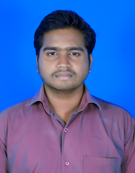

C.Manojkumar

CAREER OBJECTIVE:
I am aiming at getting into a organization where I can put my knowledge to use and gain valuable experience through learning and at the same time contribute for organization’s growth.
BASIC ACADEMIC CREDENTIALS:
- B.E (Mechanical Engineering)
CGPA 7.07
S.A Engineering College, Avadi.
May 2013 - July 2017
- Higher Secondary School
Score-71%
S.B.O.A Mat.Hr.Sec.School,Annanagar.
May 2012 - July 2013
- Secondary School
Score-74%
S.B.O.A Mat.Hr.Sec.School,Annanagar
May 2010 - July 2011
Experience:
- Worked as Quality Engineer in HMA industries Pvt.ltd in the year 2017 to 2019.
- Working as QA/QC
Specialist in GP Strategies Private
Limited India from 2020 – Present.
Skills:
- Html-5
- CSS
- My-sql
- Python
- Javascript
Certification:
- Certified in Business English Certificate Preliminary level from University of Cambridge with “B1” grade.
- Certification of Software Testing in Accord infomatrix , Chennai.
- Certification of Full Stack Developement in NxtWave , Chennai.
Contact Details Hobbies